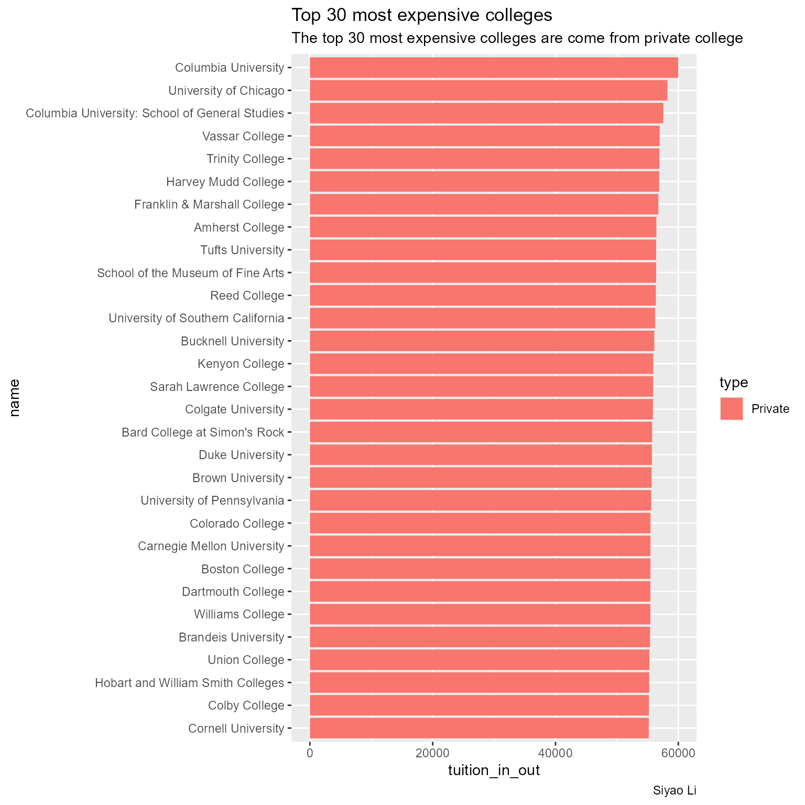
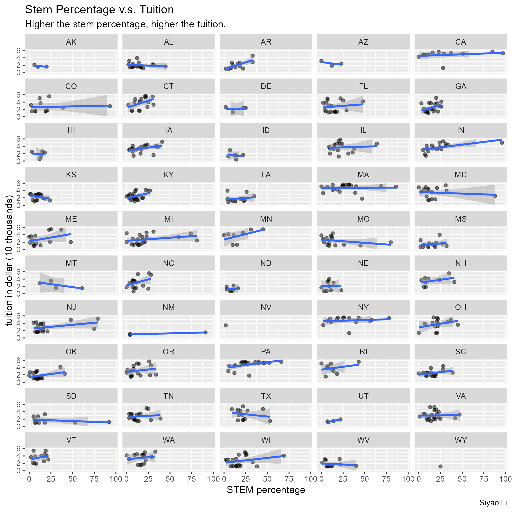
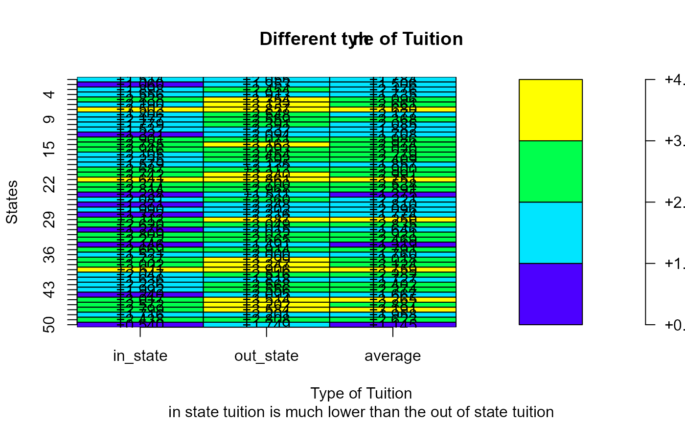

library(plot.matrix)
library(dplyr)
library(tidyr)
library(tidyverse)
library(purrr)
library(forcats)Background
## import data
library(here)
if(!file.exists(here("inst/extdata","tuition_cost.RDS"))){
tuition_cost <- readr::read_csv('https://raw.githubusercontent.com/rfordatascience/tidytuesday/master/data/2020/2020-03-10/tuition_cost.csv')
salary_potential <- readr::read_csv('https://raw.githubusercontent.com/rfordatascience/tidytuesday/master/data/2020/2020-03-10/salary_potential.csv')
# save the files to RDS objects
saveRDS(tuition_cost, file = here("inst/extdata","tuition_cost.RDS"))
saveRDS(salary_potential, file = here("inst/extdata","salary_potential.RDS"))
}
tuition_cost = readRDS(here("inst/extdata","tuition_cost.RDS"))
salary_potential = readRDS(here("inst/extdata","salary_potential.RDS"))Question: We want to analysis the in state tuition and out of state tuition from the United States.
Data: The data shows the tuition cost from different universities with different year length and type, which most data are originally came from the US Department of Education.
Data Dictionary: The data dictionary is below: https://github.com/rfordatascience/tidytuesday/tree/master/data/2020/2020-03-10#data-dictionary
Data Wrangling
We want to specifically analysis the tuition from the colleges which has a degree length of 4 years, and combine the data of STEM percentage. Also, we want to know the average tuition which are from out of state and from in state, so we average two different types of tuition.
tuition = tuition_cost %>%
filter(degree_length == "4 Year") %>%
drop_na() %>%
left_join(salary_potential, by = "name")
tuition_in_out = pmap_dbl(tuition,
.f = function(in_state_tuition, out_of_state_tuition, ...){
(in_state_tuition + out_of_state_tuition)/2
})
tuition = cbind(tuition,tuition_in_out)Data Visulazation
Colleges Tuition Ranking
tuition %>%
arrange(desc(tuition_in_out)) %>%
head(30) %>%
mutate(name = fct_reorder(name, tuition_in_out)) %>%
ggplot(aes(x = name, y = tuition_in_out, fill = type)) +
geom_col() +
coord_flip() +
labs(title = "Top 30 most expensive colleges",
subtitle = "The top 30 most expensive colleges are come from private college",
xlab = "Tuition in dollar",
ylab = "College Name",
caption = "Siyao Li")
Relationship between the STEM Percentage and the Tuition
tuition %>%
drop_na() %>%
ggplot(aes(x = stem_percent, y = tuition_in_out/10000)) +
geom_point(alpha = 0.5) +
geom_smooth(method = "lm") +
facet_wrap(~state_code, nrow = 10) +
labs(x = "STEM percentage",
y = "tuition in dollar (10 thousands)",
title = "Stem Percentage v.s. Tuition",
subtitle = "Higher the stem percentage, higher the tuition.",
caption = "Siyao Li") +
ylim(c(0, max(tuition_in_out/10000)))
Heat Map between States and Different Type of Tuition
tuition_dat = tuition |> split(tuition$state)
tuition_in_state = tuition_dat |> map_df(.f = ~mean(.x$in_state_tuition)) %>% t()
tuition_in_state = cbind(state = rownames(tuition_in_state), tuition_in_state)
tuition_in_state = as.tibble(tuition_in_state)
tuition_in_state$V2 = as.double(tuition_in_state$V2)
tuition_out_state = tuition_dat |> map_df(.f = ~mean(.x$out_of_state_tuition)) %>% t()
tuition_out_state = cbind(state = rownames(tuition_out_state), tuition_out_state)
tuition_out_state = as.tibble(tuition_out_state)
tuition_out_state$V2 = as.double(tuition_out_state$V2)
tuition_in_out_state = tuition_dat |> map_df(.f = ~mean(.x$tuition_in_out)) %>% t()
tuition_in_out_state = cbind(state = rownames(tuition_in_out_state), tuition_in_out_state)
tuition_in_out_state = as.tibble(tuition_in_out_state)
tuition_in_out_state$V2 = as.double(tuition_in_out_state$V2)
summary = full_join(tuition_in_state, tuition_out_state, by = "state") %>%
full_join(tuition_in_out_state, by = "state")
colnames(summary) = c("state","in_state","out_state","average")
summary$in_state = summary$in_state/10000
summary$out_state = summary$out_state/10000
summary$average = summary$average/10000
m = as.matrix(summary[,2:4])
plot(m,breaks=4,digits = 3,col=topo.colors, xlab="Type of Tuition", ylab="States")
title(main = "Different tyle of Tuition",
sub = "in state tuition is much lower than the out of state tuition")
Summary
In conclusion, we can notice that the most expensive colleges are private colleges, and the percentage of stem is higher means that the higher the tuition cost. Also, the out of state tuition cost is higher than the in state tuition cost.
Appendix
purrr:
map_df(),pmap_dbl()dplyr:
arrange(),desc(),mutate(),full_join()tidyr:
drop_na()forcats:
fct_reorder(),ggplot:
geom_point(),geom_smooth(),geom_col(),facet_wrap()plot.matrix:
plot()(the most functions in this package is the arguments in the plot function, like change the breaks, and digits.)